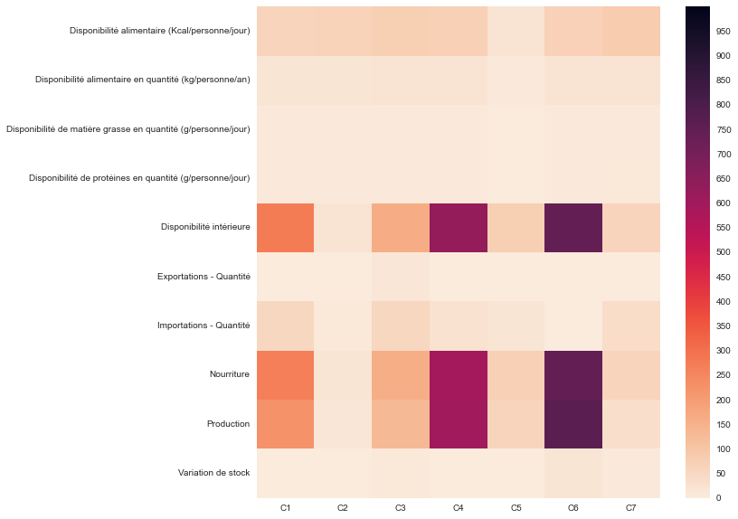

Présentation des résultats de l'analyse
Cette analyse permet de mettre en lumière des groupements / clusters de pays.
Pour rappel l'entreprise cherche à exporter ses poulets.
Il y a plusieurs variables qui seront prises en compte:
-La disponibilité intérieure qui témoigne de la disponibilité totale toutes utilisations confondues.
-L'exportation
-L'importation
-La production
La nourriture ne sera pas prises en compte étant donnée qu'elle représente la nourriture humaine locale, et qu'il n'y a pas eu dans les consignes de mention sur l'utilisation strictement humaine et locale.
La disponibilité intérieure est calculée par la formule suivante (production + importation - exportation + variation de stock)
À NOTER que le tableau de comparaison est fait à partir des moyennes.
À noter aussi que certains cluster contiennent plus de pays que d'autres et aussi que certains pays ont une population plus importante que d'autres (Chine par exemple).
Ce qui rend la comparaison entre clusters de la variable disponibilité intérieure délicate.
C'est pour cette raison que nous allons analyser les résultats en pourcentages (les importations par rapport à leurs disponibilités intérieures et les exportations par rapport à leurs productions).
Pour savoir quel pays se trouve dans quel cluster voir la carte ci-dessous.
Pour sélectionnner un ou plusieur cluster ou encore tous, cliquer sur le logo contenant une flèche en haut à gauche de la carte.
 * Tableau des moyennes par clusters
* Tableau des moyennes par clusters
 * HeatMap (plus les quantités sont élevées plus la couleur est foncée)
* Tableau des pourcentages
En regardant le tableau des pourcentages ci-dessus:
On peut constater que C7 , C2, C3 sont ceux qui importent le plus (plus de la moitié de leurs disponibilités intérieures).
On peut aussi constater que les exportations de production sont existantes mais plutôt faibles en comparaison des importations.
Les clusters qui exportent le plus sont C2, C7, C3, mais en quantité assez faible (moins de 15%).
C4, et C6 sont chacun 1 seul pays (Venezuela et Maroc).
On voit d'ailleurs que le Venezuela produit la majorité de sa dispo et n'exporte pas, l'on peut mettre ce pays hors de la course.
Le Maroc lui produit beaucoup, mais export et importe peu.
Pour revenir sur les clusters C7, C2, C3 qui importent la majorité de leurs disponibilités intérieures, ce sont des pays de toutes les régions du monde (Afrique, Amérique, Pays de l'Est, Asie).
Il pourrait être intéressant de voir quels sont les pays les plus en demandes dans ces clusters.
Il pourrait être intéressant de regarder aussi les cluster C5 et C1, qui importent moins mais qui le font quand même, pour voir si la cela vient du fait que ce sont des pays moins consommateurs de poulets ou bien si ce sont des pays qui ont moins de possibilités que ceux des clusters cités plus haut (moins riche par exemple).
Quand on regarde les pays présents dans les clusters l'on peut aussi ce demandé si l'instabilité de certains pays a un rôle dans leurs consommations de poulet (problème d'approvisionnement, problème d'élevage...).
Il pourrait être intéressant de concentrer sur les pays les plus proches au départ dans un souci de transport et logistique.
Par exemple dans le cluster 2 il y a le Luxembourg et Malte, dans le cluster 3 il y a la Lettonie et la Slovénie ou encore l'Albanie, Estonie...
L'intérêt des pays cités plus haut et qu'ils sont dans l'Union Européenne ce qui peut dans un début de conquête du marché international ce trouver plus facile ayant des normes communes.
Retour sur la page principale